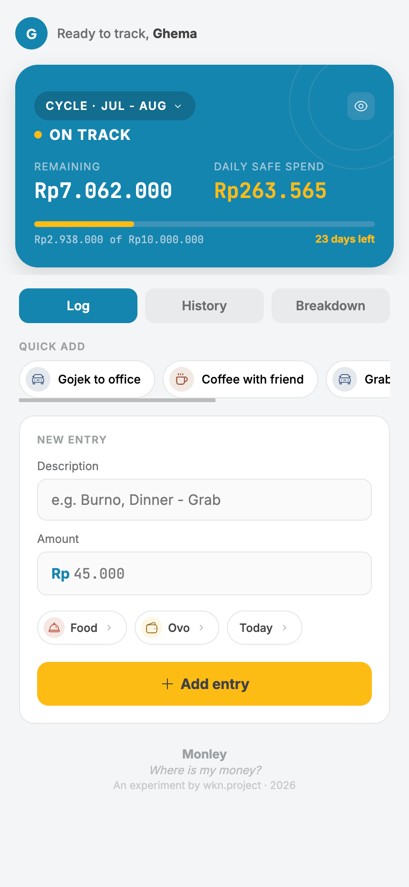
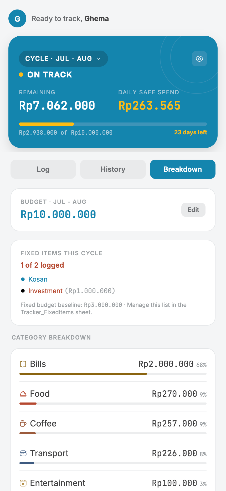
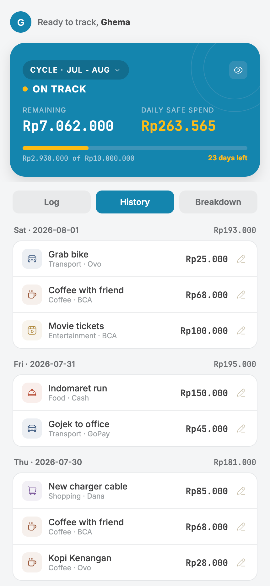

The spark
I've been tracking my spending for a while. The habit was never the hard part, consistency was.
It started in Excel, building my own formulas to answer one thing: not just where the money went, but how much I had left to spend, right now.
I tried the usual apps too. Feature-rich, well designed, and somehow still too heavy to open every day. So I moved back to Google Sheets and started over.
Now, with AI in the picture, I started thinking about simplifying it properly: less columns to fill, better UI, and using AI as part of the build itself.
That's Monley. Built to answer one question honestly: where is my money?
What it does
- Daily spend limit, calculated live, so you always know how much is actually safe to spend today, not just what's left in the month
- Logs daily spend against a monthly cycle, not a calendar month
- Quick-add, built to remove the friction that made the old apps feel heavy
- A reconciliation view at the end of each cycle, so you know, not guess
- Splits fixed costs (rent, recurring transfers) from actual daily spend

fig. 01 — daily view, showing today's spend limit
Open, and yours to build on
Monley isn't staying locked to my own sheet. The plan is to open it up fully, the template and the script, so anyone can copy it, run it, and shape it into their own version.
No installation. No coding skills needed. It runs entirely online, inside a Google Sheet you already have.
open source
no install
runs in your browser
How it's built
No backend, no hosting bill, no new account to create. Monley is a Google Apps Script web app sitting directly on top of a Google Sheet.
Google Apps Script
Google Sheets
HTML / CSS / JS

fig. 02 — spend breakdown, by category
Try it yourself
- Make your own copy of the Monley template sheet [link]
- Open Extensions → Apps Script from that sheet
- Paste in the Monley script [link to code]
- Click Deploy → New deployment → Web app
- Set access to "Only myself" (or "Anyone with the link" if you want to share it)
- Copy the web app URL, bookmark it, start logging
Takes about ten minutes the first time. Just patience.

fig. 03 — history log, reconciliation across the cycle
What I'd love feedback on
Does the daily logging actually feel light enough to stick with?
Does splitting fixed vs daily spend match how you think about your own money?
Tell me what broke.
If you try it and have thoughts, reach out, this entry updates as the experiment does.